Clinical Approach to Acute Pelvic Pain
- β-hCG in every woman of reproductive age. Dr. Black's single most emphasized test. And when a patient insists she isn't sexually active, still ask to do it — "just to be reassured."
- The differential crosses every organ system — GI, urologic, MSK, gynecologic, vascular, neurologic, plus referred pain from pneumonia or a herniated disc. A gynecologist gets consulted to rule out gynecologic causes, not because it is always gynecologic.
- Your job is to identify the life- and limb-threatening causes. That framing drives everything below.
- History and physical exam are the most important part of any approach to pelvic pain — her opening slide, and it is what narrows the investigations rather than the reverse.
- Onset is the highest-yield history question. Woken from sleep by sudden pain vs pain that began during vigorous physical activity point to very different diagnoses.
- Four cases, four must-know diagnoses: ruptured ectopic (shoulder-tip pain, tenesmus, β-hCG positive, dropping Hb) · PID (unwell, foul discharge, chandelier sign, β-hCG negative) · ovarian torsion (sudden pain during activity, vomiting, adnexal mass — a surgical emergency) · ruptured hemorrhagic ovarian cyst (2–3 weeks post-LMP, sudden pain, postural hypotension).
- Ultrasound is the imaging modality of choice for the pelvis — cheap, readily available, and no radiation. A bedside FAST answers the one question that matters acutely: is there free fluid / hemoperitoneum?
- Ovarian torsion is time-critical: IP-ligament compression drops venous then arterial flow → edema → more compression → ischemia and necrosis. Enlarged ovaries tort more readily — "a weighted pendulum" — so always look for the underlying mass.
- Don't skip the social history. She says it twice: smoking, alcohol, drug use and sexual practices materially change the differential.
Learning Objectives
- Outline a clinical approach to both acute and chronic pelvic pain.
- Recognize common causes of acute and chronic pelvic pain.
- List a differential diagnosis for both acute and chronic pelvic pain.
- Outline appropriate investigations for pelvic pain.
- Identify treatment options for common causes of pelvic pain.
Dr. Stephanie Black's 39-minute module — the first half of one deck that covers acute then chronic pelvic pain; the chronic half is 4.14. Declared conflict: Bayer advisory board for intrauterine contraception (Mirena/Kyleena), neither of which features here. How she intends it to be used: the deck is built as clinical cases, and she explicitly prompts you to pause at each case and build a differential and an investigation plan before revealing the answer — alone or with colleagues. The case answers are given below each case on this page, so cover them if you want to work through it her way. She also teaches 4.13.
This module's four case videos are H5P interactive videos hosted outside Panopto, and they have no caption track of any kind — so unlike the other Thursday lectures, there is no transcript for them. Only the 8-minute introduction is on Panopto and transcribed. Fortunately the deck itself carries the full case content including every answer, so nothing on this page is guesswork; the cases below are reproduced from her slides. What is lost is the spoken commentary between slides during the cases, which is why a few sections here are shorter than on the other pages.
The General Approach
Before any case. This section applies equally to the chronic pain module.
History and Physical Come First
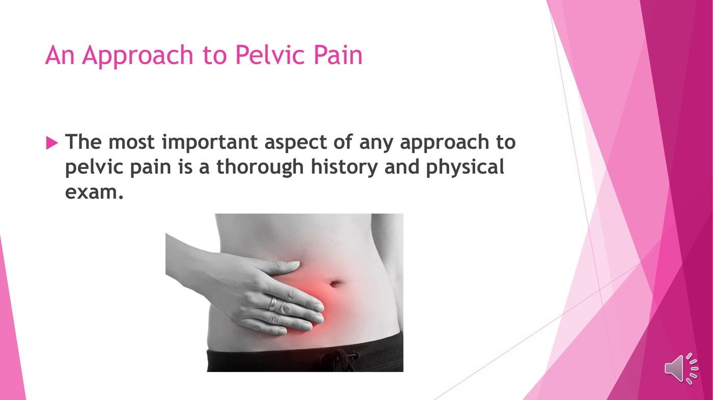
One bullet, deliberately. It is critical for developing the differential, and therefore for narrowing the investigations and the treatment plan.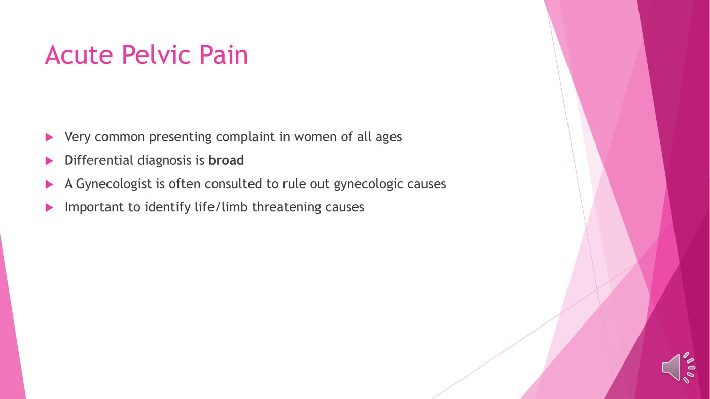
Note the third bullet. The gynecologist's role is often to rule gynecologic causes out. Patients present anywhere — primary care, walk-in, gynecology office, or the ER.![Two-column table titled Differential diagnosis of acute pelvic pain. Gastrointestinal column lists appendicitis, bowel obstruction, constipation, diverticulitis, fecal impaction, gastroenteritis, Hirschsprung's disease, incarcerated hernia, intussusception, irritable bowel syndrome, Meckel's diverticulum, neoplasm, perforated viscus, regional ileitis (Crohn's disease), ulcerative colitis, volvulus. Urologic lists cystitis, neoplasm, urolithiasis, pyelonephritis, calculi. Musculoskeletal lists abdominal wall hematoma or infection, trauma, herniated disc, arthritis, strain or sprain, hernia, neoplasm. Gynecological column lists pregnancy complications, abortion, dysmenorrhea, ectopic pregnancy, pelvic inflammatory disease, endometritis, neoplasm, ovarian cyst, salpingitis, torsion of adnexa, rupture of ovarian cyst, endometriosis. Vascular lists ischemic bowel, neoplasm, sickle cell crisis. Neurological lists abdominal epilepsy, abdominal migraine, depression, herpes zoster, neoplasm. Other lists pneumonia, herniated disk. Source line reads reproduced with permission from Howard FM, Acute Abdominal Pain, in Primary Care for Women, Lippincott Williams and Wilkins.](../../../../assets/images/week-4/acute-pelvic-pain/differential-table.jpg)
History of the Pain — OPQRST
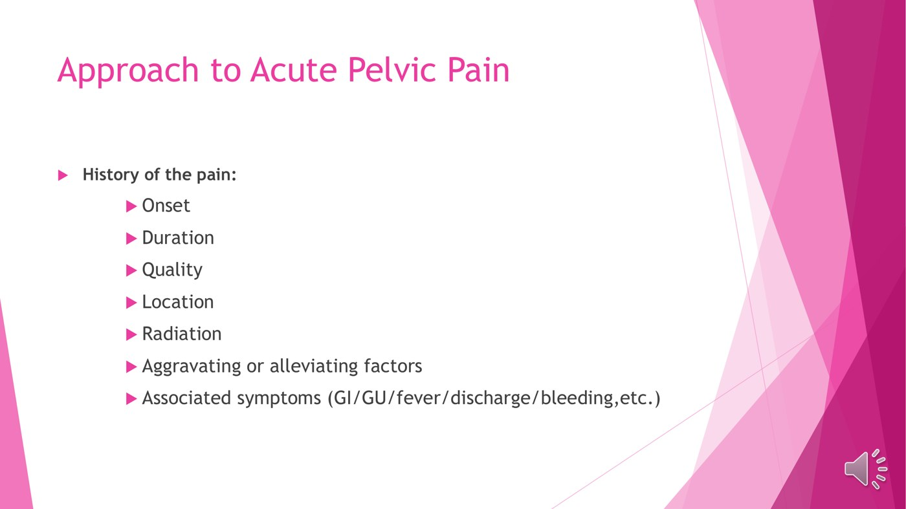
| Element | What to ask | Why it discriminates |
|---|---|---|
| Onset | What was she doing? Sudden or gradual? | Her key example: woken from sleep by sudden pelvic pain vs pain starting during physical activity gives very different differentials — the second raises torsion and ruptured cyst |
| Duration | How long, and is it constant? | Separates acute from chronic (see 4.14) |
| Quality | Sharp, stabbing, colicky, burning | Colicky suggests a hollow viscus; sharp and stabbing suggests an acute vascular or rupture event |
| Location + Radiation | Where, and does it go anywhere? | Shoulder tip → diaphragmatic irritation → blood in the peritoneum. Back → torsion or renal |
| Aggravating / alleviating | Rest, eating, movement, heat | Worse on eating points GI; positional change points to hemoperitoneum |
| Associated symptoms | GI (constipation, diarrhea, gas) · GU (dysuria) · systemic (fever) · vaginal discharge · vaginal bleeding | Each one recruits a different column of the table above |
Physical Exam
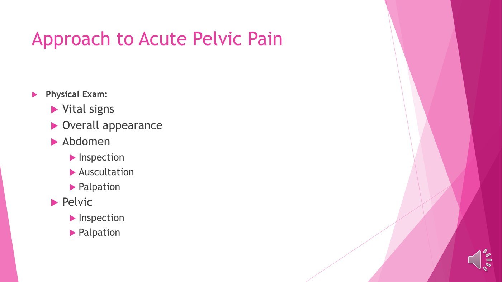
- Vital signs first — her reasoning: clinical instability sends you down the life-threatening path, so this is a triage step, not a formality.
- Overall appearance from the end of the bed — does she look genuinely sick and unwell, or fairly healthy despite the pain? A cheap and surprisingly discriminating observation.
- Abdomen: inspection, auscultation, palpation.
- Pelvic: inspection of the external genitalia, speculum inspection, and bimanual palpation — two fingers in the vagina, one hand on the abdomen, palpating the uterosacral ligament insertions, the uterus, and the adnexal regions.
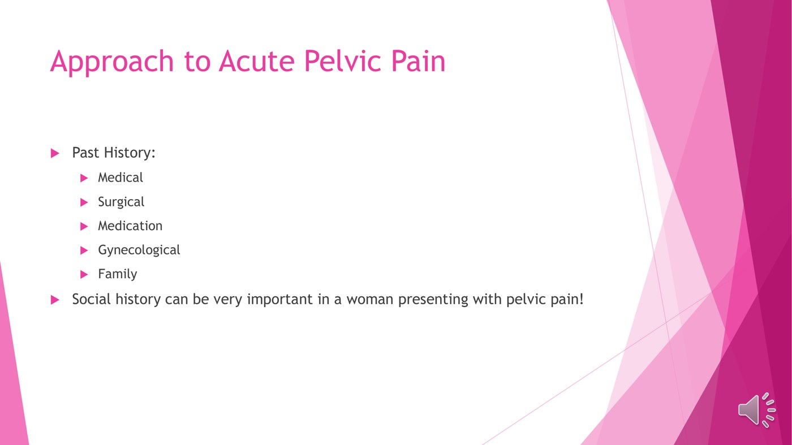
Don't stop at the pain history. Gynecologic history — especially the LMP — and obstetric history (number of pregnancies). Family history matters more for chronic pain.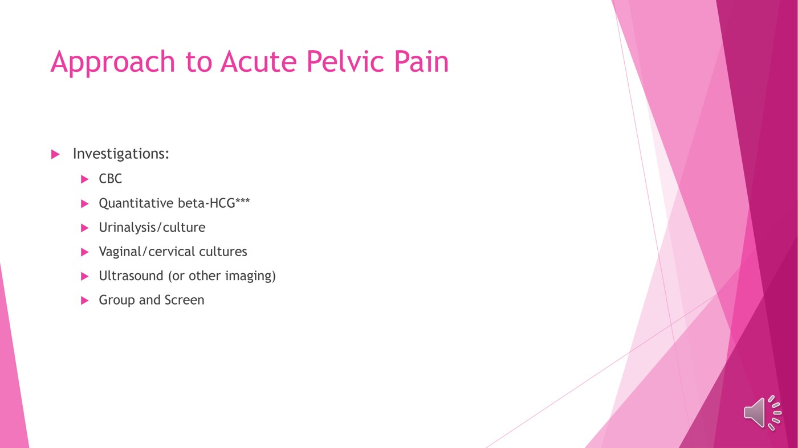
Note the three asterisks on quantitative β-hCG — her emphasis, not an accident.CBC does two jobs: the white count if you suspect infection, and the hemoglobin if you are worried about intra-abdominal hemorrhage. Quantitative β-hCG is the critical test in any woman of reproductive age — and she addresses the awkward case head on: when a patient insists she is not, or has not recently been, sexually active, still advise doing it anyway, framed as reassurance. Urinalysis and culture exclude GU causes such as cystitis. Vaginal and cervical cultures where infection is possible. Group and screen when transfusion is conceivable.
On imaging: ultrasound is the modality of choice for the pelvis — cheap and widely available. In London it is available until at least 11 pm and can be obtained overnight by calling a tech back in for life-threatening gynecologic causes; in some peripheral centres it is not available overnight, so CT is relied on for an initial impression. And a bedside FAST scan can be used to look for free fluid or hemoperitoneum, particularly when transfusion may be needed.
Case 1 — Ectopic Pregnancy
Answers below each case. Cover them and work it through first.
Case 1: Katie, 25
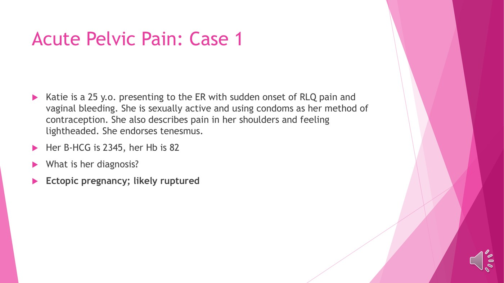
Five findings, each of which independently raises the diagnosis. β-hCG 2345 — she is pregnant, and condoms are a method with real typical-use failure. Sudden RLQ pain + vaginal bleeding — the classic pair. Hb 82 — she is bleeding internally; you cannot see it. Shoulder pain — blood in the peritoneum irritating the diaphragm (see below). Tenesmus — blood pooling in the pouch of Douglas irritating the rectum. Lightheaded — hypovolemia. Put together: not just an ectopic, but a ruptured one, and she is unstable.
![Slide titled Ectopic Pregnancy: incidence of ectopic pregnancy is 6 to 16%; 98% of ectopics occur in the fallopian tube; other sites include ovarian, cervical, cornual, abdominal, Caesarean section scar; ectopic pregnancy accounts for 4 to 10% of first trimester deaths in pregnancy; risk factors include pelvic infection, previous ectopic, smoking, adhesions, multiple sexual partners, IUD in situ with a note that IUDs do NOT increase the incidence of ectopic pregnancy but the likelihood of a pregnancy being ectopic if one should occur with an IUD in situ.](../../../../assets/images/week-4/acute-pelvic-pain/ectopic-facts.jpg) 98% are tubal. And read the IUD footnote carefully — it is a classic exam distinction, unpacked below.
98% are tubal. And read the IUD footnote carefully — it is a classic exam distinction, unpacked below.
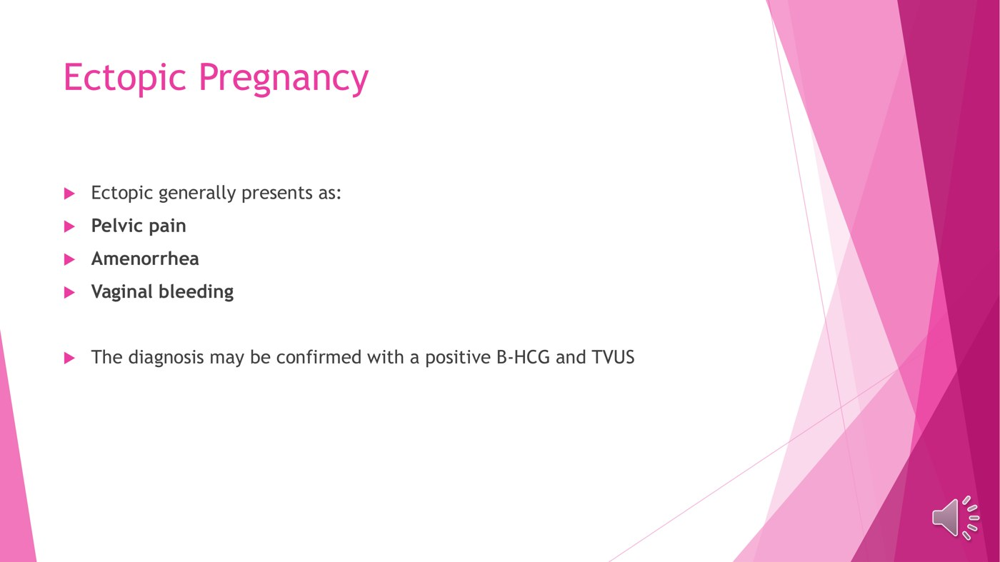
The classic triad: pelvic pain + amenorrhea + vaginal bleeding. Confirmed with β-hCG + TVUS.Her slide footnote is worth quoting almost exactly, because the sloppy version is wrong: IUDs do NOT increase the incidence of ectopic pregnancy. What they increase is the likelihood that a pregnancy is ectopic if a pregnancy occurs with an IUD in situ. The mechanism is straightforward once stated: the IUD is very effective at preventing intrauterine implantation, so it removes intrauterine pregnancies from the denominator far more than extrauterine ones — the proportion shifts without the absolute risk rising. Practically: an IUD user with a positive pregnancy test needs an ectopic excluded urgently.
Risk factors to know: pelvic infection · previous ectopic · smoking · adhesions · multiple sexual partners · IUD in situ (as qualified above). Other sites beyond the tube: ovarian, cervical, cornual, abdominal, and caesarean-section scar. And the reason this matters: ectopic pregnancy accounts for 4–10% of first-trimester deaths in pregnancy.
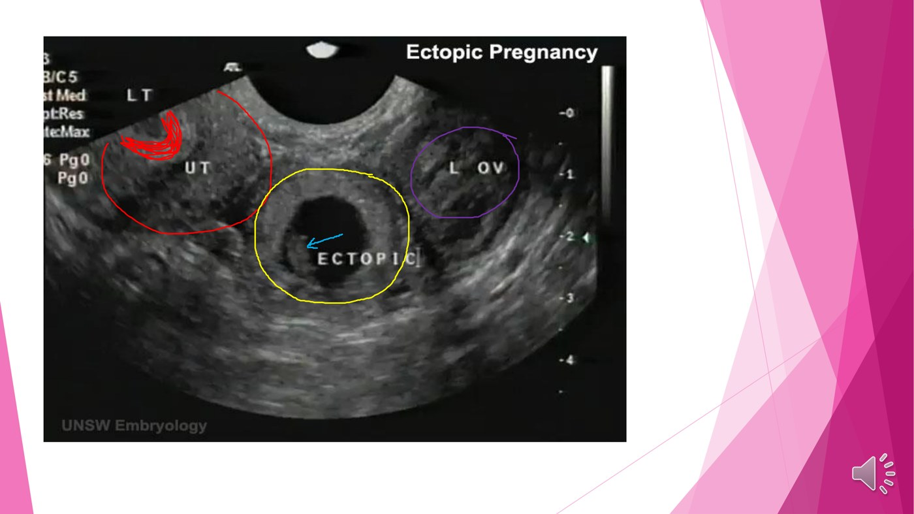
On TVUS: an empty uterus (UT), the left ovary (L OV), and an adnexal structure separate from both — the ectopic.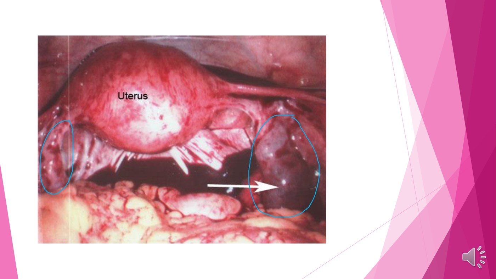
At laparoscopy: the distended, blood-filled tube, with free blood in the pelvis.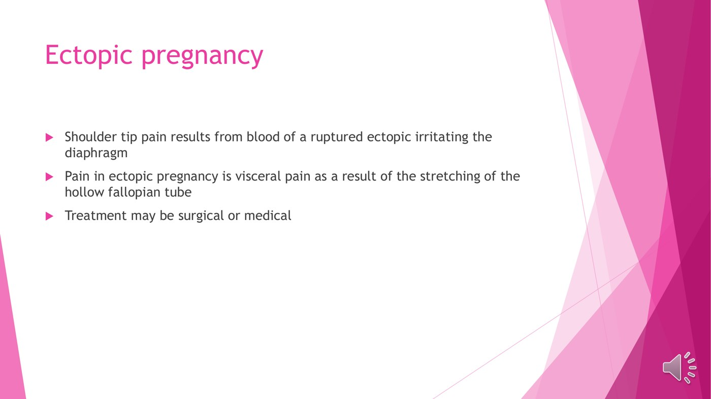
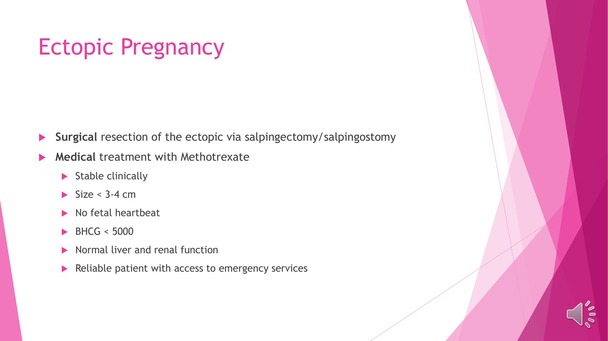
| Option | Detail |
|---|---|
| Surgical | Resection via salpingectomy (remove the tube) or salpingostomy (open the tube, remove the pregnancy, preserve the tube) |
| Medical — methotrexate | Requires all of: clinically stable · size <3–4 cm · no fetal heartbeat · β-hCG <5000 · normal liver and renal function · reliable patient with access to emergency services |
Worth doing explicitly, because it is how this gets examined. Katie's β-hCG is 2345 (<5000, so that one passes) — but she has shoulder-tip pain, tenesmus, lightheadedness and an Hb of 82. She fails the very first criterion, clinically stable, and by a wide margin. Methotrexate is not an option; she goes to the operating room. The last criterion is also worth noticing as a principle: medical management commits the patient to follow-up and to recognizing deterioration at home, so reliability and access to emergency services are clinical criteria, not administrative ones.
The same territory is covered from the early-pregnancy side in 4.9, which is the preparation for Tuesday's integrative ectopic session.
Case 2 — Pelvic Inflammatory Disease
Case 2: Sara, 17
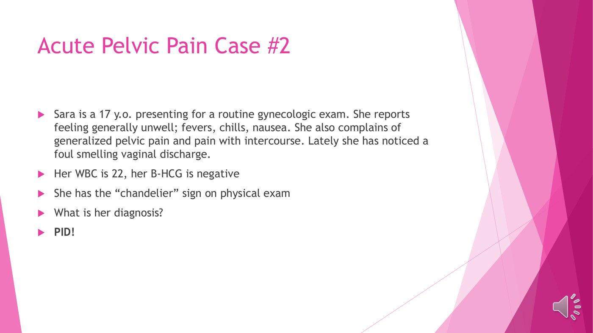
Extreme cervical motion tenderness — the patient jumps toward the chandelier when the cervix is moved on bimanual exam. It signals peritoneal irritation of the upper genital tract and is a classic PID finding. Note also that Sara presented for a routine exam, not with an emergency — the diagnosis came from asking and examining.
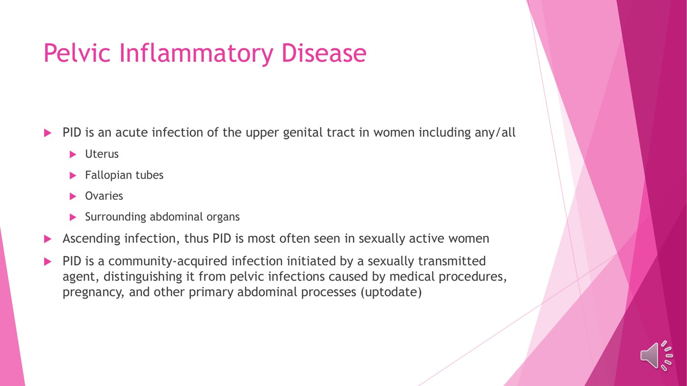
An acute infection of the UPPER genital tract — uterus, tubes, ovaries and surrounding abdominal organs. It is an ascending infection, hence sexually active women.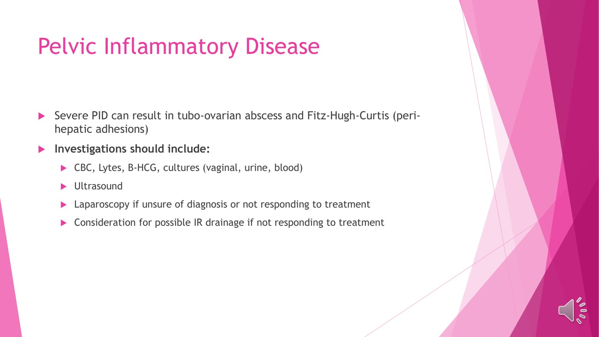
Two named complications: tubo-ovarian abscess and Fitz-Hugh–Curtis syndrome (perihepatic adhesions).Her slide draws a line that is easy to miss: PID is specifically a community-acquired infection initiated by a sexually transmitted agent. That is what distinguishes it from pelvic infections caused by medical procedures, by pregnancy, or by other primary abdominal processes. So "pelvic infection" is not synonymous with PID, and the distinction changes both the likely organisms and the management. 4.6 covers PID in much greater depth, including the organisms, admission criteria and the 14-day rule — read the two together.
Escalation for non-response: laparoscopy if the diagnosis is uncertain or she is not responding, and consideration of interventional-radiology drainage if still not responding — i.e. suspect a tubo-ovarian abscess that needs draining rather than more antibiotics.
Case 3 — Ovarian Torsion
The surgical emergency on this list.
Case 3: Helen, 45
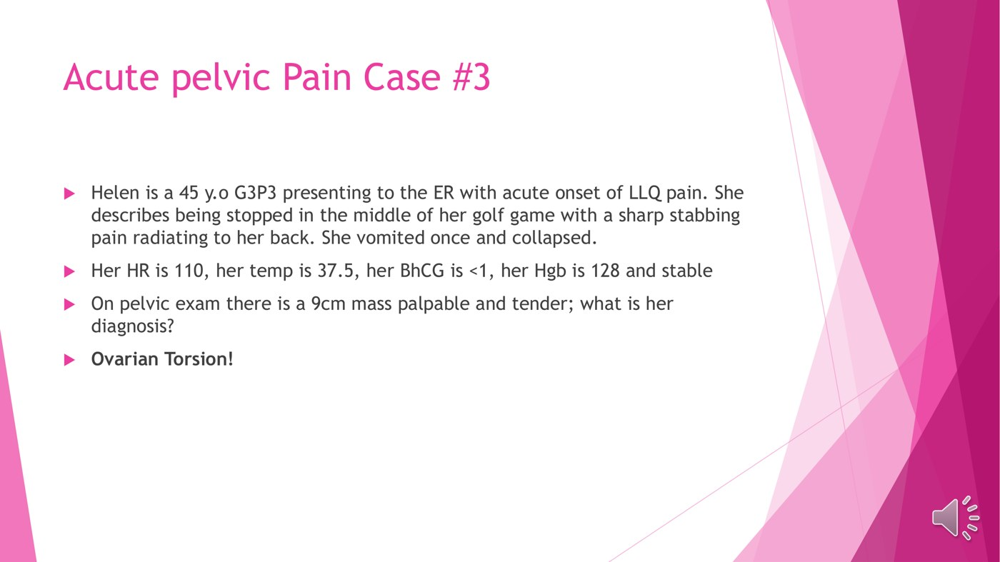
Onset during vigorous physical activity (stopped mid-golf-game) is the history feature she flagged in Part 1 as pointing here. Sharp, stabbing, radiating to the back, with vomiting and collapse — torsion hurts out of proportion and is strongly emetogenic. Then the exclusions: β-hCG <1 rules out ectopic; Hb 128 and stable rules out significant hemorrhage, which separates it from Case 4; temp 37.5 with no infective history makes PID unlikely. What is left is the 9 cm tender palpable mass — and a 9 cm ovary is exactly the size that torts.
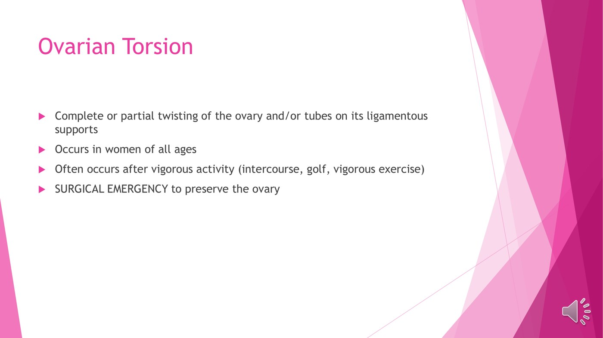
A surgical emergency — and the goal of the surgery is to preserve the ovary. Precipitants: intercourse, golf, vigorous exercise.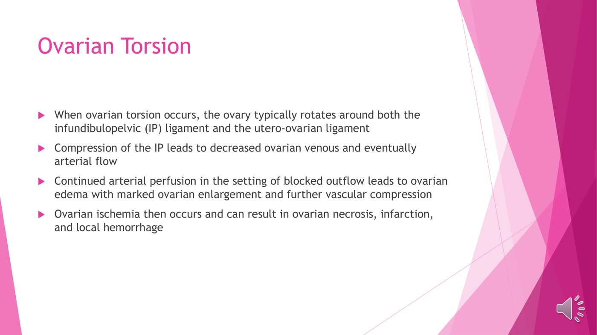
The pathophysiology, which is a vicious cycle — see below.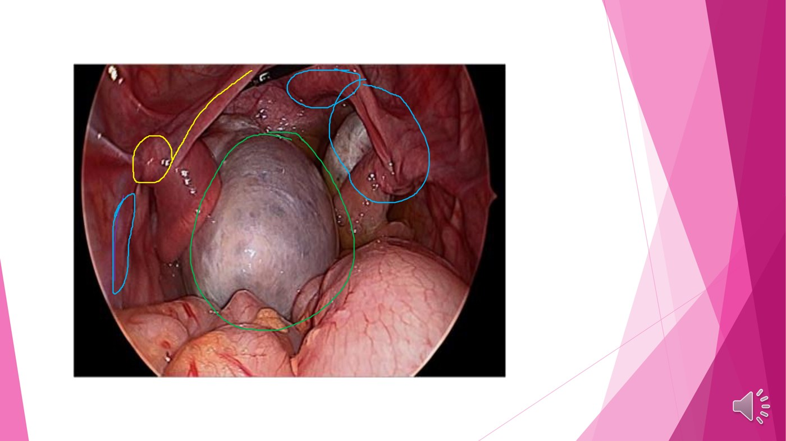
At laparoscopy — the enlarged adnexal mass in situ.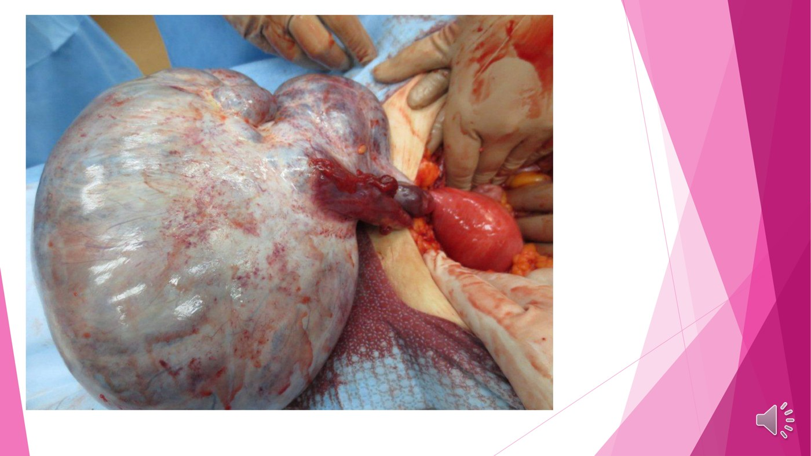
The delivered specimen — the sheer size is the point. An ovary this big acts "like a weighted pendulum."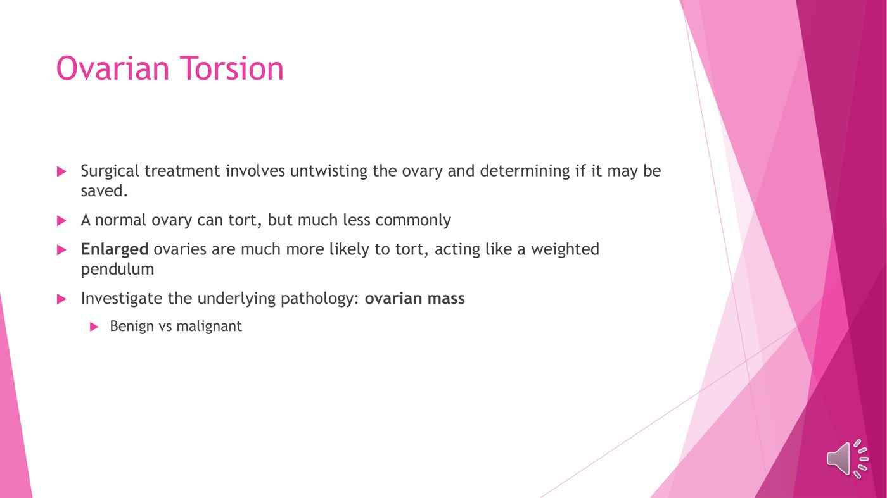
Case 4 — Ruptured Hemorrhagic Ovarian Cyst
Case 4: Lisa, 33
![Slide titled Acute Pelvic Pain Case number 4: Lisa is a 33 year old nulligravid woman who has been trying to conceive. She presents to the emergency room with 9 out of 10 pain in the right lower quadrant. She endorses tenesmus, shoulder pain when she lays down, and lightheadedness when standing. The pain presented suddenly after intercourse. Her last menstrual period was just over 2 weeks ago. Her beta-hCG is less than 1. Her hemoglobin is 78, dropping from 110 at presentation a few hours earlier. Her blood pressure is 110 over 70 with heart rate 80 laying flat, but 86 over 55 standing with a heart rate of 112. What is her diagnosis? Answer: ruptured ovarian cyst with hemorrhage.](../../../../assets/images/week-4/acute-pelvic-pain/case4.jpg)
Notice how carefully this case is built to look like the ruptured ectopic: tenesmus, shoulder pain, lightheadedness, and a falling hemoglobin (110 → 78) are all Katie's findings, and for the same underlying reason — blood in the peritoneum. The one finding that separates them is β-hCG <1: she is not pregnant, so it cannot be an ectopic. That is the whole lesson — hemoperitoneum has a characteristic presentation independent of its cause, and β-hCG is what tells you which cause you are dealing with.
Two more features that fit: the LMP just over 2 weeks ago puts her right at ovulation, which is when these cysts rupture, and the pain began suddenly after intercourse — the blunt-trauma mechanism on the next slide. The postural vitals (110/70 with HR 80 lying, 86/55 with HR 112 standing) are the finding to actually copy into practice: her supine numbers look almost normal, and the instability only shows when she stands.
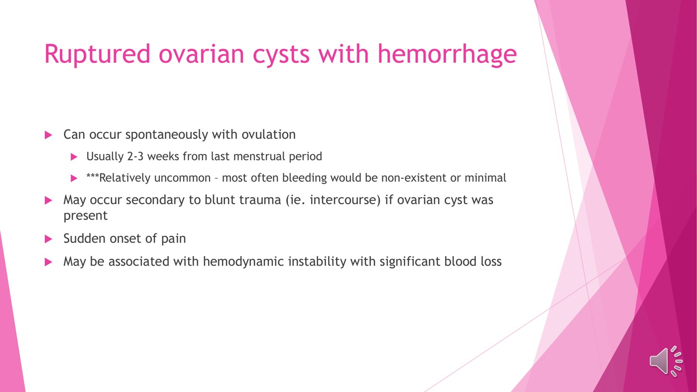
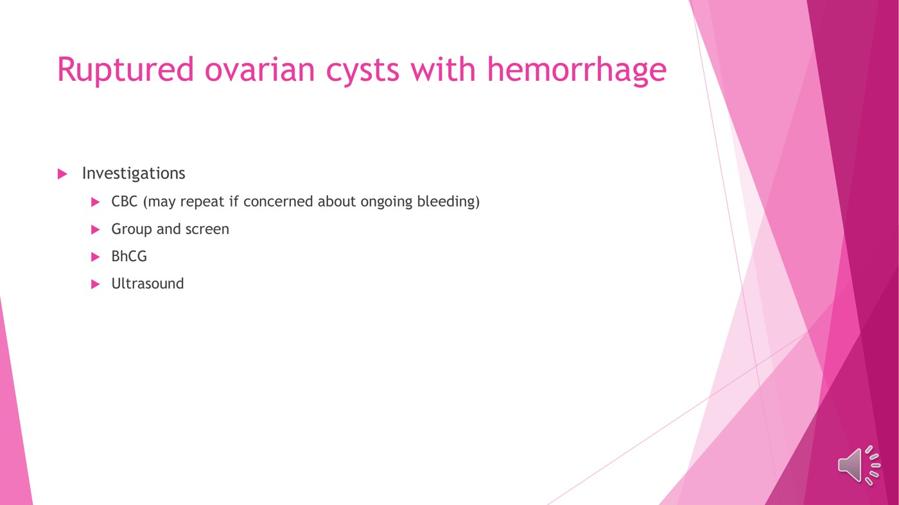
Note "may repeat" the CBC — a single hemoglobin is a snapshot. Lisa's diagnosis rests on the trend, 110 falling to 78.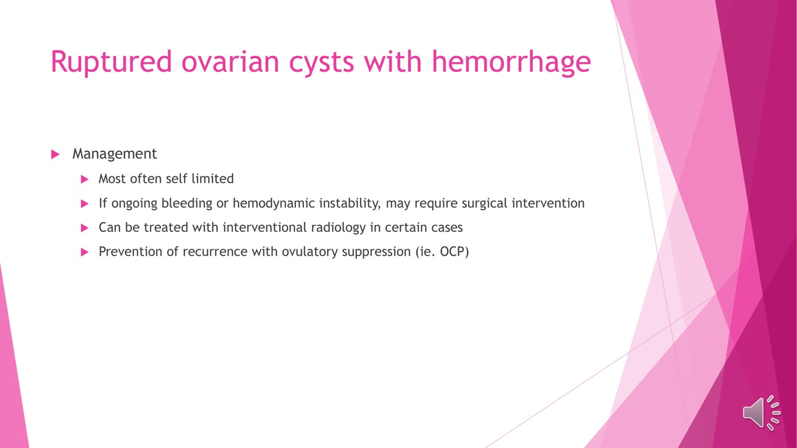
Most often self-limited. Surgery only for ongoing bleeding or instability; IR in selected cases. And prevent recurrence with ovulatory suppression.Ovulatory suppression prevents recurrence because these cysts rupture at ovulation — no ovulation, no corpus luteum cyst to rupture. It is the same "non-contraceptive benefit of a contraceptive" logic that runs through 4.10 and 4.13.
But note the clash the case sets up without stating it: Lisa is nulligravid and trying to conceive. An OCP prevents recurrence by preventing ovulation — which is precisely what she does not want. That tension, between treating the condition and respecting the patient's goal, is the same judgement Dr. Arntfield frames as "ask what her goals are" and Dr. Black frames as fertility-sparing treatment in 4.13. Worth having an answer ready if it comes up in the small group.
Built from Dr. Stephanie Black's "Clinical Approach to Acute Pelvic Pain" module (39 min) and its 32-slide deck. All figures are slides from that deck; the differential-diagnosis table on her slide is from UpToDate, reproduced with permission from Howard FM, "Acute Abdominal Pain," in Primary Care for Women (Lippincott Williams & Wilkins), and the PID definition slide cites UpToDate. Only the 8-minute introduction is on Panopto with a transcript; the four case segments are H5P interactive videos with no caption track at all — so the general-approach section above draws on her spoken narration, while the four cases are reproduced from the slides, which carry the complete case content and every answer. What is not captured is her spoken commentary during the cases. The introduction's auto-transcript required the usual corrections — OPQRST appears as "0pqrst," dysuria as "to Syria," the uterosacral ligaments as "MSC and ligaments," adnexal as "at axial," "rule out" as "reload," hemoperitoneum as "hemo peritoneum," type and screen as "takeup and screen," last menstrual period as "last month so period," and Mirena/Kyleena as "Marana and Kalina." No claims on this page were added from outside the two sources. Related pages: 4.14 is the second half of this same deck, 4.9 covers ectopic pregnancy from the early-pregnancy side, 4.6 covers PID in depth, 4.13 for endometriosis as a pain cause, and 4.10 for the bleeding that often accompanies these presentations.